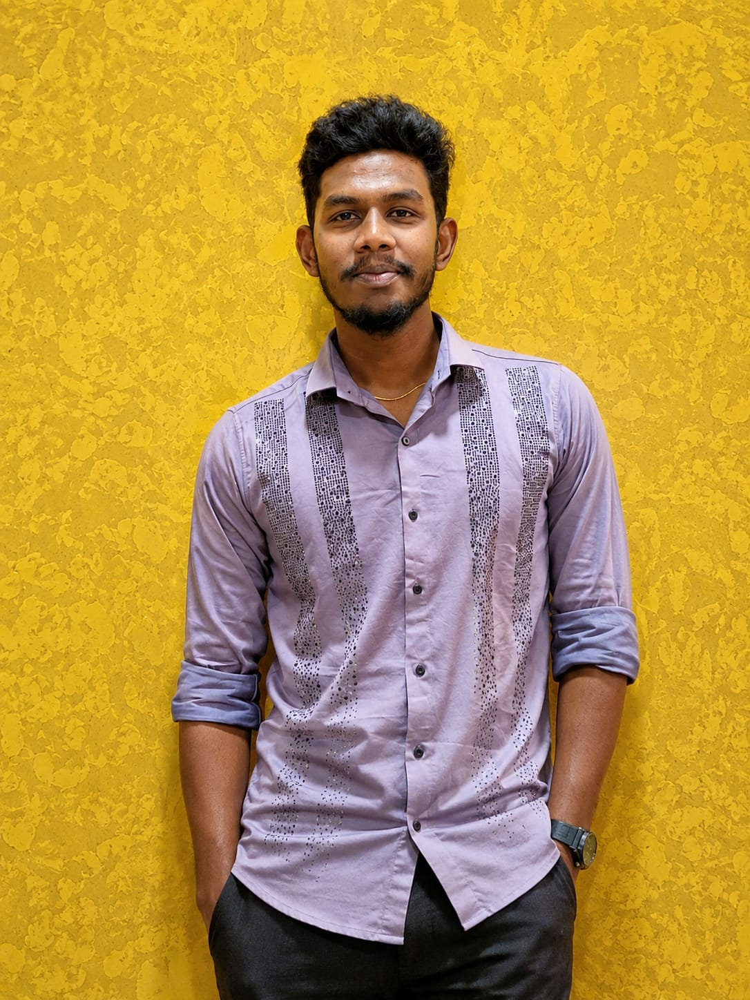

2024–PRESENT · INTERNATIONAL AMC
International Technical Support
Long-term technical AMC support for two international clients, covering reliable website operations, updates, monitoring and ongoing improvement.
ELLOLING helps startups and growing businesses build products, structure operations and maintain the technology behind their growth.
Explore our case studies →More than 15 clients across India and two international clients trust us for practical delivery and long-term technical AMC support.
Long-term technical AMC support for two international clients, covering reliable website operations, updates, monitoring and ongoing improvement.
Supported the Malaysian trading company with website delivery and a stronger digital foundation for its business.
Visit hasiria.com →Designed and delivered an e-commerce website to help the fashion brand present and sell its products online.
Supported online sales with a combination of technology delivery and practical operational support.
Product development and structured operational support for a growing business platform.
A web application that simplifies church ministry operations. Members can organise Bible verses, songs and service notes, then collaborate in dedicated fellowship workspaces for lyric teams, drummers, keyboardists and vocalists.

Akash founded ELLOLING in Chennai in September 2023 and has led its evolution into a product development and business technology company.
Today, he leads product strategy, client partnerships and the operational systems that help startup teams turn ideas into dependable, scalable work.
Tell us what you are building, improving or trying to simplify.
Start a Conversation →